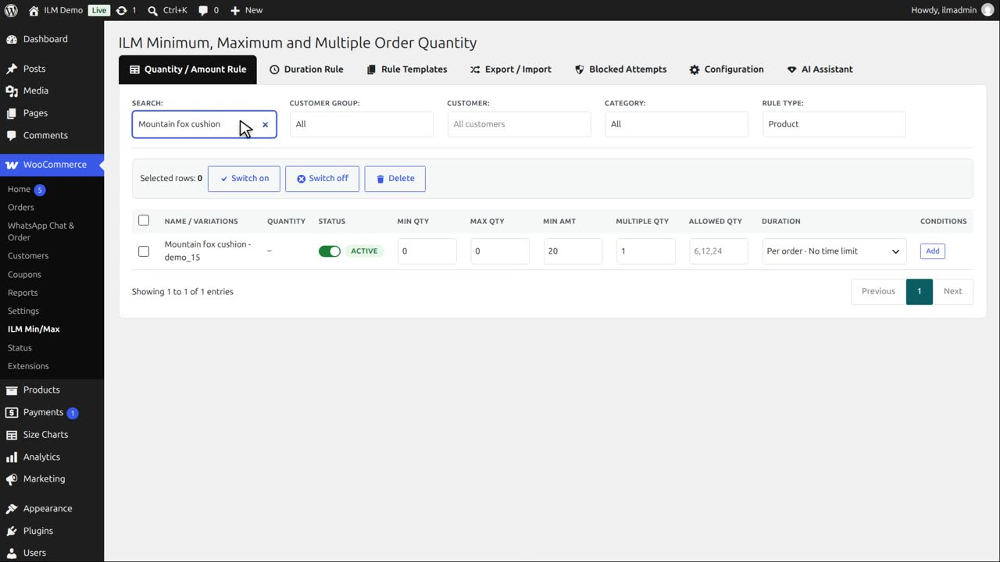
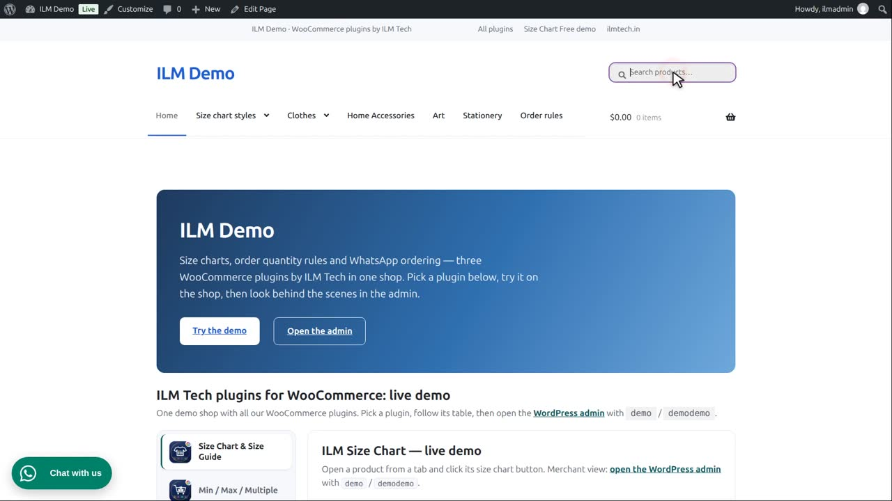
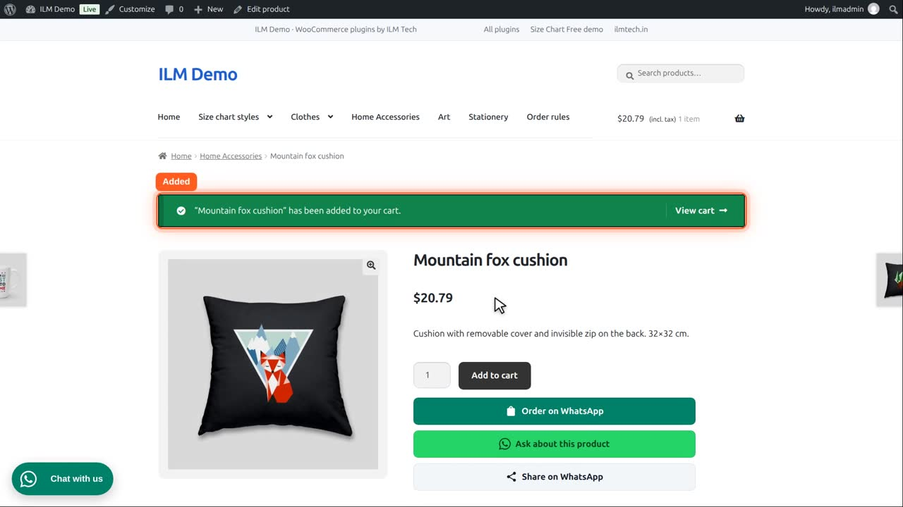
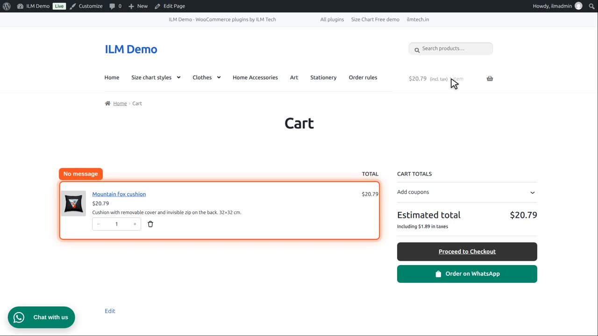
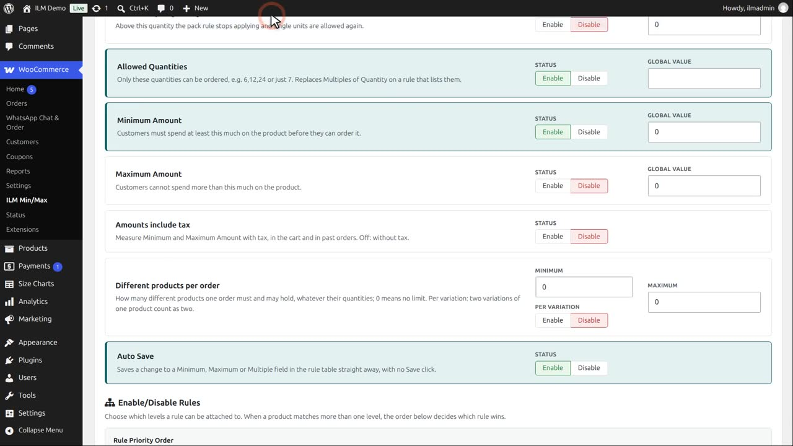

Pro add-on. This feature needs the Pro add-on. See Free and Pro.
| Setting | What it does |
|---|---|
| Amounts include tax | Measures Minimum and Maximum Amount with tax, in the cart and in past orders. Off: without tax. |
The Mountain fox cushion has a minimum amount of twenty dollars. It costs eighteen ninety without tax, and twenty seventy nine with ten percent tax.

Amounts include tax is enabled, so amounts are measured with tax.

A customer adds one to the cart.

Twenty seventy nine with tax is more than twenty, so there is no message.

Now disable Amounts include tax. Amounts are measured without tax.

The same cart now counts eighteen ninety, below twenty, so the customer is asked to spend at least twenty dollars. The setting also applies to past orders counted by duration rules.